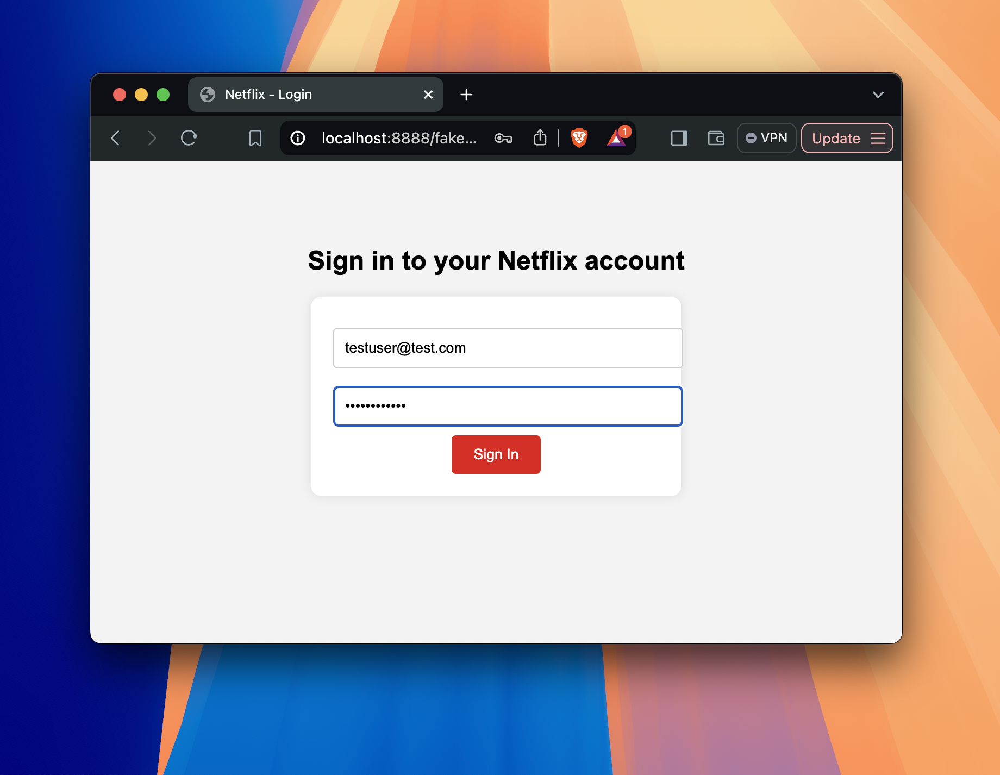
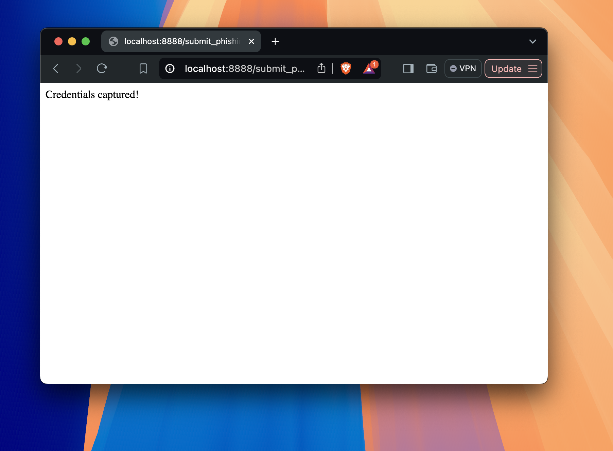

1. First Image (packet_sniffer.py): This is a Python script for packet sniffing using the scapy library, which captures packet details.2. Second Image (fake email template): This is an email phishing template made to mimic Netflix’s email, asking users to “Confirm Your Account Here.”3. Third Image (submit_phishing_form.php): This is a PHP file that captures and logs the credentials into the phishing log file.4. Fourth Image (MAMP PRO settings): This shows the setup of your MAMP PRO environment where you host your fake phishing page locally. This is where you start the Apache server crucial for running and testing your phishing project, allowing you to serve web pages and run server-side scripts like PHP locally on your machine. This helps in ensuring your project behaves as expected before deploying or further analyzing it.

5. Fifth Image (fake Netflix login page): This is a fake Netflix login page meant to capture users’ login credentials. You arrive at the page when you click on the link found in the Fake Email Phishing template (2nd image)

6. Sixth Image (submission success page): This is the result after someone submits their credentials to the fake Netflix login, showing “Credentials captured!”7. Seventh Image (phishing log): This is the log file that stores captured credentials (username and password) from the fake login page.